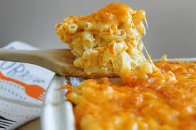

Southern Baked Mac And Cheese

Description
Southern baked mac and cheese, a staple in all southern homes.
Ingredients
- 32 oz chicken stock
- 3 1/2 cups elbow pasta
- 8 cups of cheese of choice
- 2 cups of whole milk
- 1 1/2 cup of Heavy Cream
- 3 eggs
- 3/4 cups of sour cream
- Paprika, salt, pepper
- 1 stick of butter
Cooking Steps
- Boil pasta in chicken stock for 7-8 minutes.
- Strain the pasta, then mix in 1 stick of butter until it is melted.
- Add 3/4 cups sour cream, then add seasonings and mix.
- Add in 8 cups of any cheese of your choice.
- To create your custard, in a seperate bowl add 3 eggs, 2 cups of whole milk and 1 1/2 cups of heavy cream stir until it is all combined together.
- Add your prepared pasta and custard into a cooking pan of your choice.
- Bake in the oven at 375 degrees for 45-60 minutes.
- Let your mac and cheese rest for 10 minutes, then it is ready to eat!
Recipe Credit
Original Creator Recipe